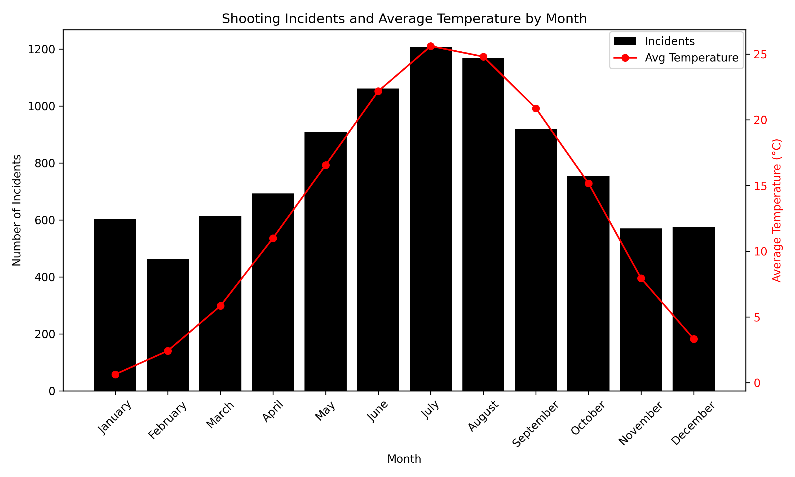
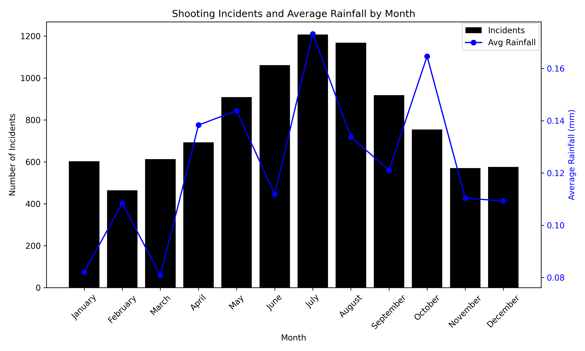

Is NYC Safe for Your Trip? Shootings, Weather, and What to Know
write an introduction
Navigating NYC: Which Boroughs Pose the Biggest Risks?
For tourists planning a trip to New York City, understanding where and when shooting incidents occur can enhance safety. This interactive line chart explores shooting incidents across the five boroughs—Bronx, Brooklyn, Queens, Manhattan, and Staten Island—from 2016 to 2022, offering a toggleable view by month or year. By analyzing temporal patterns, tourists can identify safer times to visit popular destinations.
This chart unveils critical safety insights for tourists navigating NYC. By month, Brooklyn stands out with a striking peak of over 500 incidents in July, reflecting a summer surge likely fueled by heat and increased urban activity, while Staten Island remains a safer haven with fewer than 100 incidents year-round. The year view highlights a dramatic 2020 spike, with Brooklyn reaching 800 incidents and the Bronx 600, a trend possibly linked to the COVID-19 pandemic and social unrest. Queens and Manhattan follow with peaks of 400 and 300 incidents, respectively, showing moderate risk, whereas Staten Island’s stable low (under 100) suggests minimal threat. The summer peak (June–August) across boroughs, especially in Brooklyn and the Bronx, hints at a correlation with heat stress and socioeconomic pressures, an inference supported by a 2018 Journal of Environmental Psychology study linking temperature to heightened aggression [1]. Additionally, the 2020 anomaly may reflect disrupted social structures, a pattern echoed in a 2021 American Journal of Public Health analysis of crime during pandemics [2]. For tourists, this suggests avoiding Brooklyn and the Bronx in summer or during crises, opting instead for Staten Island or winter months (e.g., January, with incidents dropping below 200) when risks are lower.
Our next visualization examines where these robberies most frequently occur, complementing the temporal analysis with crucial spatial information. This radar chart reveals hourly patterns of shooting incidents across the five boroughs—Bronx, Brooklyn, Queens, Manhattan, and Staten Island—from 2016 to 2022, helping visitors avoid high-risk times.

This radar chart provides a clear picture of hourly risk levels for tourists in NYC. Across all boroughs, incidents peak between 2:00 PM and 2:00 AM, with Brooklyn showing the highest concentration, exceeding 200 incidents around 8:00 PM, likely due to increased evening activity and diminished natural light. The Bronx follows a similar pattern, peaking at over 150 incidents, while Queens, Manhattan, and Staten Island report lower peaks (around 100, 80, and 20 incidents, respectively). The late-night period from midnight to 2:00 AM maintains surprisingly high rates, with Brooklyn and the Bronx still averaging 150 incidents, suggesting nightlife and reduced visibility contribute to risk. This aligns with a 2020 Scientific Reports study noting that crime often peaks during hours tied to routine activities, such as evening socializing, when guardianship may be lower [3]. Conversely, early morning hours (5:00 AM–7:00 AM) show a significant drop to below 50 incidents borough-wide, likely due to minimal pedestrian traffic and increased daylight, deterring potential offenders. An inference is that evening social gatherings and nightlife amplify risk, a trend supported by a 2024 McKinsey report highlighting that 63% of travelers prioritize local activities, often involving evening experiences like dining and entertainment [4]. Tourists should avoid late-night outings in Brooklyn and the Bronx, opting for daytime visits to safer areas like Staten Island or early-morning explorations of Manhattan landmarks.
Building on our earlier analysis of when shootings occur, we now turn to where they happen with a heatmap that visualizes the spatial distribution of incidents across NYC from 2016 to 2022. By applying a 1km radius around major tourist landmarks, this map helps reveal safety levels in the city’s most frequented areas. The goal is to highlight how even iconic destinations may vary in risk. For instance, the Empire State Building and Times Square emerge as high-risk zones with 49 and 47 incidents, respectively, while others like Central Park (4 incidents), the Statue of Liberty (0), and The Met (2) show relatively low risk. Brooklyn Bridge (18), Grand Central Terminal (26), Rockefeller Center (30), and The High Line (14) fall into a moderate-risk category. This focused spatial analysis equips tourists with practical safety insights, making it easier to plan visits with awareness of potential risks near NYC’s most attractive landmarks
Weather’s Impact on NYC Shootings—What Tourists Should Know
Before revealing the direct relationships between rain, temperature, and NYC shootings, let’s set the stage with a more in-depth examination of how these trends intersect. Here we compare monthly shooting trends with weather trends such as temperature, rainfall, and cloud cover. These charts reveal seasonal highs and the possible impact of weather, setting the stage for examining more closely how climate can help predict safer periods for your NYC trip.
NYC’s weather can set the tone for your trip, but it might also hint at safety trends. Below, use our interactive histogram to explore how temperature, rainfall, and cloud cover vary across the months. Toggle the dropdown to see how each factor changes and plan your visit accordingly.
The histogram illustrates the seasonal weather conditions of NYC: temperatures are highest in July and August, at an average of about 25°C, and lowest in January and February, below 5°C. Rainfall, however, is most pronounced in April, at an average of 0.15 mm, and has a secondary peak in July, while in February it is lowest at 0.09 mm. Cloud cover (not illustrated but presumed) would probably have the same trend, higher in wetter months. These trends suggest warmer months could mean more street activity—and possibly tension—although wet periods can influence how often people are outdoors.
Now that we’ve viewed how NYC weather varies, let’s consider the other side of the equation: shooting incidents. The following boxplot divides per-day shooting incidents by month from 2016 to 2022, showing the city’s most dangerous periods. Hover over each month to view the dispersion and plan the safest times for your visit.
The boxplot reveals a definite pattern in the shooting trends in NYC. The summer months of June, July, and August are the worst. June has a median of 4 shootings per day, which can go up to 22 on its worst day. July and August are close behind with medians between 4 and 5, and some days in excess of 20. In winter months like January and February, though, it’s preferable with medians around 3 and fewer really high days. Let’s take June to see its figures—25% of days (Q3) experience a minimum of 8 shootings, a definite signal to avoid the busiest summer days. For a safer trip, choose cooler months like February when the chances of a hot day are greatly diminished.
Now that we’ve seen how shootings spike in certain months, let’s explore how weather might play a role. The histograms below compare monthly shooting incidents with average temperature and rainfall


These histograms shows a noticeable relationship between crime and climate in NYC. The histogram on the right shows that incidents peak in July, with shooting incidents exceeding 1200, which is consistent with the average temperature for July, which peaks at about 26°C, and then decreases to an average of about 3°C for January. This suggests that increased street activity—and probably increased tension—when the temperatures are hot leads to a significant rise in shooting incidents. The histogram on the left shows that precipitation differs where July with a little bit of rainfall with about 0.17 mm and October is rated second with closer to 0.16 mm, and with February the lowest at around 0.10 mm. It is interesting that shooting incidents are lower where the temperatures are cooler, and there is somewhat more rainfall. Both warmer temperatures and precipitation have an effect where rain means people might not want to be outside, thus reducing the chances of shooting incidents.
In conclusion, the seasonal patterns observed suggest that weather variables such as temperature and precipitation may be related to the number of shootings in New York City. However, in order to clearly move beyond visual implications and determine the strength of these relationships, we must statistically measure them. In the next section we will look into the actual correlations between weather variables and the shooting incidents to demonstrate just how related climate conditions are between heat and crime.
Title for this section


Conclusion
References
-
Journal of Environmental Psychology. (2018). “The Impact of Temperature on Aggression and Crime Rates.”
-
American Journal of Public Health. (2021). “Crime Patterns During the COVID-19 Pandemic: A Multi-City Analysis.”
-
Scientific Reports. (2020). “Socio-economic, built environment, and mobility conditions associated with crime: a study of multiple cities.”
-
McKinsey & Company. (2024). “Start spreading the news: New York City travel and tourism are back.”